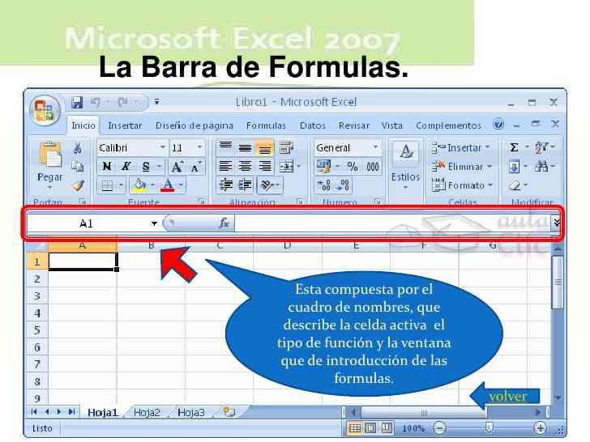

Excel es un sistema informático perfeccionado y compartido por Microsoft Corp. Consiste en un software que nos posibilita a desarrollar trabajos contables y financieros gracias a sus funciones, que fueron creadas especialmente para ayudar a trabajar y elaborar hojas de cálculo. En la primera exploración de Microsoft en la creación de las hojas de cálculo permitieron manejar datos numéricos en lista constituida por la unión de filas y columnas, esta fue creada en 1982, con la exhibición de Multiplan. Dando cabida 3 años después a la primera versión del Excel.
La empresa Microsoft se vio obligada a cambiar el nombre de Excel por Microsoft Excel, debido a que tuvo que enfrentar una demanda por otra empresa que ya había empezado a utilizar el nombre, ya para 1989 se hace público el lanzamiento de Microsoft Office, el cual era un conjunto de aplicaciones informáticas muy útiles en el área de oficinas, puesto que incluía programas como Word, Excel y PowerPoint. Para nadie es un secreto los problemas que ha presentado rl programa Excel, siendo uno de los primeros, el impedimento de permitir trabajar documentos con fechas anteriores al año 1900.
En la actualidad este programa en su pantalla principal posee una central formada por columnas y filas, lo que dan paso a la formación de las denominadas celdas, la cual contará con una dirección específica asignada, determinado por la columna y fila a la que pertenece, en dicha celdas es posible, colocar tanto datos numéricos como alfanuméricos. Una herramienta muy útil que provee Excel es la de la realización de cálculos aritméticos, mediante el uso de fórmulas, la cual debe estar seguido por regla de un signo igual (=). Así como estas son muchas las herramientas que este programa te ofrece, es por ello que en la actualidad se ha convertido en uno de los programas favoritos para los usuarios, hasta el punto de convertirse en indispensable sus uso.
En el área laboral se ha convertido en una de los programas más utilizados, en especial en el área de la finanzas, sin embargo sus fronteras han trascendidos hacia otras áreas pues su fácil utilización ha permitido que sean cada vez más los usuarios y las áreas en donde se utiliza, es por ello que en la actualidad el saber manejar Excel se ha convertido en algo muy valorado al momento de querer ingresar a un trabajo.
Se trata de la misma barra horizontal donde se muestra el nombre de la hoja.
Son las columnas donde se llegan a añadir los datos, las cuales se diferencian a través de letras que las identifican y a la vez pueden ser combinadas entre sí. En total tiene 256 columnas.
Es la barra donde aparecen los número que identifican a cada fila, los cuales están en posición vertical y a la izquierda de la pantalla.
Es aquí donde se logra visualizar el nombre de la celda que está activa o de la dirección que se tiene seleccionada.
Se trata de una línea de estado donde se muestra el estado en que está el programa.
Estas filas permite la correcta organización de los datos añadidos. En total el excel posee 65,536 filas, cada una identificada por un número.
Se trata de la interacción existente entre una fila y una columna. Cada una de las celdas tiene una dirección diferente. Las celdas presenta un borde grueso que tiende a rodearla, lo cual se conoce como indicador de la celda.
En esta barra suele aparecer aquellos datos ingresados o que se van ingresando en la celda actual o activa. En esta parte también es posible editar el contenido de una celda.
Son las columnas donde se llegan a añadir los datos, las cuales se diferencian a través de letras que las identifican y a la vez pueden ser combinadas entre sí. En total tiene 256 columnas.
Es la barra donde aparecen los número que identifican a cada fila, los cuales están en posición vertical y a la izquierda de la pantalla.
Es aquí donde se logra visualizar el nombre de la celda que está activa o de la dirección que se tiene seleccionada.
Se trata de una línea de estado donde se muestra el estado en que está el programa.
Estas filas permite la correcta organización de los datos añadidos. En total el excel posee 65,536 filas, cada una identificada por un número.
Se trata de la interacción existente entre una fila y una columna. Cada una de las celdas tiene una dirección diferente. Las celdas presenta un borde grueso que tiende a rodearla, lo cual se conoce como indicador de la celda.
En esta barra suele aparecer aquellos datos ingresados o que se van ingresando en la celda actual o activa. En esta parte también es posible editar el contenido de una celda

A través de estos botones el usuario puede desplazarse por toda la hoja de trabajo siempre y cuando esté en un libro de excel. Con estos se puede pasar de una hoja a otra sin importar el orden en que estén.
Con estas se logra separar un libro en hojas de cálculo específicas, donde el libro contiene tres hojas de cálculo en total, recomendado tener una hoja de cálculo por lo menos.
Este llega a sustituir el menú archivo, el cual se encuentra a mano izquierda y en la esquina superior de la pantalla. Cuando se da clic aparecen comandos como abrir, imprimir y guardar archivo.